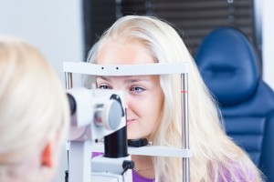

<?xml version="1.0" encoding="UTF-8"?><rss version="2.0"
	xmlns:content="http://purl.org/rss/1.0/modules/content/"
	xmlns:wfw="http://wellformedweb.org/CommentAPI/"
	xmlns:dc="http://purl.org/dc/elements/1.1/"
	xmlns:atom="http://www.w3.org/2005/Atom"
	xmlns:sy="http://purl.org/rss/1.0/modules/syndication/"
	xmlns:slash="http://purl.org/rss/1.0/modules/slash/"
	>

<channel>
	<title>pjdhanoa &#8211; Optometrist in Annapolis</title>
	<atom:link href="http://annapolis.eyefitvisioncenters.com/eyeglasses/author/pjdhanoa/feed/" rel="self" type="application/rss+xml" />
	<link>http://annapolis.eyefitvisioncenters.com/eyeglasses</link>
	<description>eye doctor &#124; eye exam &#124; eyeglasses frames</description>
	<lastBuildDate>Fri, 25 Mar 2016 18:25:12 +0000</lastBuildDate>
	<language>en-US</language>
	<sy:updatePeriod>hourly</sy:updatePeriod>
	<sy:updateFrequency>1</sy:updateFrequency>
	
	<item>
		<title>Annapolis Optometrist</title>
		<link>http://annapolis.eyefitvisioncenters.com/eyeglasses/annapolis-optometrist-3/</link>
		<pubDate>Fri, 25 Mar 2016 18:25:12 +0000</pubDate>
		<dc:creator><![CDATA[pjdhanoa]]></dc:creator>
				<category><![CDATA[Optometrist]]></category>
		<category><![CDATA[annapolis]]></category>
		<category><![CDATA[comprehensive exams]]></category>
		<category><![CDATA[eye health]]></category>
		<category><![CDATA[optometrist]]></category>
		<category><![CDATA[pediatric optometrist]]></category>
		<category><![CDATA[vision damage]]></category>

		<guid isPermaLink="false">http://annapolis.eyefitvisioncenters.com/eyeglasses/?p=66</guid>
		<description><![CDATA[Optometry in Annapolis Just how often do you see your eye doctor? How often do you think about your eye health? In general, it is widely recommended the people of all ages see their eye doctor at least once a year, and eye health to keep your eye health as well as your general well-being [&#8230;]]]></description>
				<content:encoded><![CDATA[<h1 style="text-align: justify;"><a href="http://eyefitvisioncenters.com">Optometry in Annapolis</a></h1>
<div id="attachment_30" style="width: 310px" class="wp-caption alignleft"><a href="../../../wp-content/uploads/2015/07/11394288_m.jpg" rel="attachment wp-att-30"></a><p class="wp-caption-text">Annapolis optometrist</p></div>
<p style="text-align: justify;">Just how often do you see your eye doctor? How often do you think about your eye health? In general, it is widely recommended the people of all ages see their eye doctor at least once a year, and eye health to keep your eye health as well as your general well-being in mind all the time. It helps to pay attention to any signs or symptoms as balls recent developments in order to determine when you should see any kind of physician or specialist, but it is just as helpful to see a variety of different healthcare providers are at the year in order to have comprehensive exams and testing completed regardless. This is especially true for children who are still growing and developing and a considerable great. This is why kids should really see a pediatric optometrist from the time that they are about six months old, so if you are in the market for an <a href="http://eyefitvisioncenters.com">Annapolis optometrist</a> that can provide your child with the care that they need, then you need only visit us here at EyeFit Vision Centers.</p>
<p style="text-align: justify;">A child&#8217;s eyes are first examined upon exiting the birth canal for any initial sorts of deformities or developmental issues. These sorts of problems can be addressed at the hospital, but kids will continue to grow at a relatively rapid rate throughout their entire childhood. This is why it is widely recommended that children begin to see pediatric optometrist regularly from the time that they are about six months old. Because kids are still growing, it is important that you have a specialist exam in their eyes and the mechanics that control them in order to look out for any developmental issues, deformities, or any other signs of vision impairment. Vision impairments that involve eyesight disabilities, such as common ones like nearsightedness or farsightedness, or rather common and are easily treated with the use of prescription lenses, but there are a series of much more serious eye related conditions and disease that can also develop as well. These sorts of conditions can create lifelong effects, even irreversible side effects such as vision damage or loss. In order to prevent these things from happening, it is helpful to have your child see a pediatric optometrist at least once a year for a comprehensive exam. Our Annapolis optometrist here at EyeFit Vision Centers can help ensure that your child&#8217;s vision and overall eye health are in check.</p>
<p style="text-align: justify;">Eye exams, as well as a variety of other checkups and doctor visits, are especially important for children since they are still developing, but diseases and conditions can still occur in adults as well. That is why routine checkups are recommended for people of all ages, but if you happen to be looking for in <a href="http://eyefitvisioncenters.com">Annapolis optometrist</a> that can provide your child pediatric care that they need, then you can visit us here at EyeFit Vision Centers and get complete eye care for the whole family.</p>
<h3 style="text-align: justify;"><a href="http://eyefitvisioncenters.com">2321 Forest Drive</a><br />
<a href="http://eyefitvisioncenters.com">Annapolis, MD 21401</a><br />
<a href="http://eyefitvisioncenters.com">(410) 266-3369</a></h3>
]]></content:encoded>
			</item>
		<item>
		<title>Annapolis Optometrist</title>
		<link>http://annapolis.eyefitvisioncenters.com/eyeglasses/annapolis-optometrist-2/</link>
		<pubDate>Mon, 29 Feb 2016 16:02:06 +0000</pubDate>
		<dc:creator><![CDATA[pjdhanoa]]></dc:creator>
				<category><![CDATA[Optometrist]]></category>
		<category><![CDATA[annapolis]]></category>
		<category><![CDATA[eye care]]></category>
		<category><![CDATA[eye health]]></category>
		<category><![CDATA[first eye exam]]></category>
		<category><![CDATA[optimal vision]]></category>
		<category><![CDATA[optometrist]]></category>

		<guid isPermaLink="false">http://annapolis.eyefitvisioncenters.com/eyeglasses/?p=63</guid>
		<description><![CDATA[Eye care in Annapolis Comprehensive eye exams are essential in the diagnosis and treatment of your child’s vision problems, injuries, and diseases. Early detection allows for treatment to begin before the child experiences difficulty in school due to poor vision, or before any permanent damage has been done to the eye(s). At our Annapolis optometry [&#8230;]]]></description>
				<content:encoded><![CDATA[<h1 style="text-align: justify;"><a href="http://eyefitvisioncenters.com">Eye care in Annapolis</a></h1>
<div id="attachment_64" style="width: 310px" class="wp-caption alignleft"><a href="../../../wp-content/uploads/2016/02/6351780_xl.jpg" rel="attachment wp-att-64"></a><p class="wp-caption-text">Annapolis optometrist</p></div>
<p style="text-align: justify;">Comprehensive eye exams are essential in the diagnosis and treatment of your child’s vision problems, injuries, and diseases. Early detection allows for treatment to begin before the child experiences difficulty in school due to poor vision, or before any permanent damage has been done to the eye(s). At our <a href="http://eyefitvisioncenters.com">Annapolis optometry</a> office of EyeFit Vision Centers, we strive to provide the highest quality of care so that your child can achieve optimal vision and eye health that does not affect their school work or other everyday activities. We focus on kid-friendly eye exams along with medical and surgical treatment for our littlest patients.</p>
<p style="text-align: justify;">Eye examinations for children are especially important as five to ten percent of preschoolers and 25 percent of school-aged children have vision problems. The American Optometric Association (AOA) recommends that infants have their first eye exam at six months of age. Children should be re-examined at age three, and again just before they enter the first grade. Scheduling your child’s eye exam is crucial as many basic skills required in a child’s learning are associated with good eyesight, such as near and distance vision, binocular (two eyes) coordination, peripheral awareness, and hand-eye coordination. The AOA suggests that children who do not require vision correction should receive an eye exam every two years. Otherwise, children who do wear corrective lenses should have their vision evaluated annually. Comprehensive exams also test visual acuity, eye tracking and focusing skills, as well as detect problems such as nearsightedness, farsightedness, amblyopia, crossed eyes, dyslexia, and color blindness. Our team of caring Annapolis optometrists will also check for eye disease during your child’s eye exam, as well as assess how their eyes work together, and evaluate their eyes as an indicator of their overall health. Our office offers state of the art diagnostic equipment, including retinal photography and visual field testing.</p>
<p style="text-align: justify;">At the <a href="http://eyefitvisioncenters.com">Annapolis optometry</a> office of EyeFit Vision Centers, our mission is to preserve, restore, and enhance the vision of every member of your family. We are particularly inclined to treat those littler patients, as establishing good eye health early can deter further complications with their eyes and overall optical health. Please call our office today if you have any questions regarding pediatric eye exams, or if you would like to schedule an appointment.</p>
<h3 style="text-align: justify;"><a href="http://eyefitvisioncenters.com">2321 Forest Drive</a><br />
<a href="http://eyefitvisioncenters.com">Annapolis, MD 21401</a><br />
<a href="http://eyefitvisioncenters.com">(410) 266-3369</a></h3>
]]></content:encoded>
			</item>
		<item>
		<title>Sunglasses in Annapolis</title>
		<link>http://annapolis.eyefitvisioncenters.com/eyeglasses/sunglasses-in-annapolis/</link>
		<pubDate>Wed, 27 Jan 2016 19:53:42 +0000</pubDate>
		<dc:creator><![CDATA[pjdhanoa]]></dc:creator>
				<category><![CDATA[Uncategorized]]></category>
		<category><![CDATA[annapolis]]></category>
		<category><![CDATA[frame expert]]></category>
		<category><![CDATA[lens options]]></category>
		<category><![CDATA[optician]]></category>
		<category><![CDATA[optometrist]]></category>
		<category><![CDATA[Sunglasses]]></category>

		<guid isPermaLink="false">http://annapolis.eyefitvisioncenters.com/eyeglasses/?p=59</guid>
		<description><![CDATA[Annapolis Optometry Do you wear sunglasses in the fall and winter months? If not, you should. Today doctors are talking about the importance of wearing sunscreen year round to protect your skin from the sun’s harmful rays. Many facial cosmetics even contain sunscreen to protect your face and lips throughout the year. It is just [&#8230;]]]></description>
				<content:encoded><![CDATA[<h1 style="text-align: justify;"><a href="http://eyefitvisioncenters.com">Annapolis Optometry</a></h1>
<div id="attachment_60" style="width: 210px" class="wp-caption alignleft"><a href="../../../wp-content/uploads/2016/01/9998471_xl.jpg" rel="attachment wp-att-60"></a><p class="wp-caption-text">Sunglasses in Annapolis</p></div>
<p style="text-align: justify;">Do you wear sunglasses in the fall and winter months? If not, you should. Today doctors are talking about the importance of wearing sunscreen year round to protect your skin from the sun’s harmful rays. Many facial cosmetics even contain sunscreen to protect your face and lips throughout the year. It is just as important to wear sunglasses for UV protection for your eyes, even during the fall and winter month. If you want to get new <a href="http://eyefitvisioncenters.com">sunglasses in Annapolis</a>, you will be very excited to see our large selection at EyeFit Vision Centers.</p>
<p style="text-align: justify;">When you come to our vision practice and optical boutique, our frame experts and opticians will be able to help you get the right kind of sunglasses that will provide UV protection. Our optometrist is Dr. Deborah Amoroso. There are different kinds of sunglasses lenses available, but not all provide this type of protection for the eyes. It is important to get sunglasses in Annapolis that block out 100% of the sun’s UVA and UVB rays in order for your eyes to be fully protected. Overexposure to these rays can cause many different eye problems down the road, including cataracts. When you are getting regular eyeglasses, there are also lens options that will eliminate UV exposure. Our optometrist, optician or frame expert will be able to give you additional information about these lens options.</p>
<p style="text-align: justify;">Of course, you also want your <a href="http://eyefitvisioncenters.com">sunglasses in Annapolis</a> to be stylish and fashionable. For this reason we offer a wide selection of sunglasses for you to choose from. Our frame experts will be happy to help you find sunglasses that compliment your face shape and fashion sense. Sunglasses also have different colored lenses that may perform additional functions. Our knowledgeable experts will be happy to let you know more about the sunglasses you are thinking about purchasing, to make sure they are as functional as you would like for them to be. If you would like to get prescription sunglasses, you can make an appointment to see our optometrist for a new lens prescription. Patients enjoy the convenience of our one-stop-shopping optical center which allows them to get new eyeglass prescriptions, and then select great frames from the very same location. For an appointment with our optometrist contact us today. To only get a new eyeglass frame or pair of sunglasses, no appointment is ever necessary.</p>
<h3 style="text-align: justify;"><a href="http://eyefitvisioncenters.com">2321 Forest Drive</a><br />
<a href="http://eyefitvisioncenters.com">Annapolis, MD 21401</a><br />
<a href="http://eyefitvisioncenters.com">(410) 266-3369</a></h3>
]]></content:encoded>
			</item>
		<item>
		<title>Annapolis Eye Doctor</title>
		<link>http://annapolis.eyefitvisioncenters.com/eyeglasses/annapolis-eye-doctor/</link>
		<pubDate>Tue, 15 Dec 2015 21:34:45 +0000</pubDate>
		<dc:creator><![CDATA[pjdhanoa]]></dc:creator>
				<category><![CDATA[Annapolis]]></category>
		<category><![CDATA[Eye Doctor]]></category>
		<category><![CDATA[annapolis]]></category>
		<category><![CDATA[eye doctor]]></category>
		<category><![CDATA[full vision exam]]></category>
		<category><![CDATA[glaucoma care]]></category>
		<category><![CDATA[serious condition]]></category>
		<category><![CDATA[signs of glaucoma]]></category>

		<guid isPermaLink="false">http://annapolis.eyefitvisioncenters.com/eyeglasses/?p=56</guid>
		<description><![CDATA[21401 eye care If you are experiencing blurry vision, it is vital you visit your eye doctor to ensure your eyes are in good health, and that it is not an underlying symptom of a more serious condition. Although your blurry vision may be due to something as simple as general near- or far-sightedness, it [&#8230;]]]></description>
				<content:encoded><![CDATA[<h1 style="text-align: justify;"><a href="http://eyefitvisioncenters.com">21401 eye care</a></h1>
<div id="attachment_57" style="width: 310px" class="wp-caption alignleft"><a href="../../../wp-content/uploads/2015/12/841472_l.jpg" rel="attachment wp-att-57"></a><p class="wp-caption-text">Annapolis eye doctor</p></div>
<p style="text-align: justify;">If you are experiencing blurry vision, it is vital you visit your eye doctor to ensure your eyes are in good health, and that it is not an underlying symptom of a more serious condition. Although your blurry vision may be due to something as simple as general near- or far-sightedness, it could also be the early signs of glaucoma. A visit to your <a href="http://eyefitvisioncenters.com">Annapolis eye doctor</a> at EyeFit Vision Centers for glaucoma screening and eye care will help determine and treat whatever the cause of your blurred vision may be.</p>
<p style="text-align: justify;">Glaucoma, the leading cause of blindness and visual impairment in the United States, is an eye disease that can lead to a permanent loss of vision. Actually, glaucoma is not just one eye disease, but a group of eye conditions resulting in optic nerve damage, which causes loss of vision. Abnormally high pressure inside your eye (intraocular pressure) usually, but not always, causes this damage. We provide all diagnostic and treatment options for glaucoma care, including glaucoma screening in. Glaucoma generally provides no warning signs or symptoms of disease, making testing an important part of a full vision exam. If it is determined that you do suffer from glaucoma, our Annapolis eye doctor will discuss which treatment plan is best for your individual needs. Glaucoma can be treated with eye drops, pills, laser surgery, traditional surgery, or a combination of these methods. The goal of any treatment is to prevent loss of vision, as vision loss from glaucoma is irreversible. Surgery can be an incredibly effective treatment option for your eye disease. Laser treatments, for example, can be utilized for precise treatment and quick healing. However, it is best to consult our doctors first to best decide on a treatment plan right for you.</p>
<p style="text-align: justify;">Early diagnosis and treatment can minimize or prevent optic nerve damage and limit glaucoma-related vision loss. It&#8217;s important to get your eyes examined regularly, and make sure your eye doctor measures your intraocular pressure. So even if your vision is blurry, it is clear where you should go for your glaucoma testing and treatment; call EyeFit Vision Centers today to schedule an appointment with one of our <a href="http://eyefitvisioncenters.com">Annapolis eye doctor</a>.</p>
<h3 style="text-align: justify;"><a href="http://eyefitvisioncenters.com">2321 Forest Drive</a><br />
<a href="http://eyefitvisioncenters.com">Annapolis, MD 21401</a><br />
<a href="http://eyefitvisioncenters.com">Phone:(410) 266-3369</a></h3>
]]></content:encoded>
			</item>
		<item>
		<title>Eye exam in Annapolis</title>
		<link>http://annapolis.eyefitvisioncenters.com/eyeglasses/eye-exam-in-annapolis/</link>
		<pubDate>Mon, 16 Nov 2015 15:13:53 +0000</pubDate>
		<dc:creator><![CDATA[pjdhanoa]]></dc:creator>
				<category><![CDATA[Annapolis]]></category>
		<category><![CDATA[Eye Doctor]]></category>
		<category><![CDATA[21401 Eye Exam]]></category>
		<category><![CDATA[Annapolis Eye Exam]]></category>
		<category><![CDATA[comprehensive eye exam]]></category>

		<guid isPermaLink="false">http://annapolis.eyefitvisioncenters.com/eyeglasses/?p=52</guid>
		<description><![CDATA[Annapolis eye testing Are you thinking about getting contact lenses for the first time? Or do you already wear contacts but know that it is time that you had a new comprehensive contact lens fitting and eye exam? When you need a contact lens eye exam in Annapolis, you will do well to come to [&#8230;]]]></description>
				<content:encoded><![CDATA[<h2><a href="../../../../index.html">Annapolis eye testing</a></h2>
<div id="attachment_53" style="width: 310px" class="wp-caption alignleft"><a href="../../../wp-content/uploads/2015/11/1-2.jpg"></a><p class="wp-caption-text">Eye exam in Annapolis</p></div>
<p style="text-align: justify;">Are you thinking about getting contact lenses for the first time? Or do you already wear contacts but know that it is time that you had a new comprehensive contact lens fitting and eye exam? When you need a contact lens <a href="../../../../index.html">eye exam in Annapolis</a>, you will do well to come to our practice, EyeFit Vision Centers, for excellent eye care.</p>
<p style="text-align: justify;">At our practice you will be able to have a great contact lens exam and fitting by our expert and highly-skilled optometrist, Dr. Linda Marie Chous. During a contact lens <a href="../../../../index.html">eye exam in Annapolis</a> the health of your eyes will be checked. Then measurements will be taken of your eyes to make sure that the new contact lenses will fit you perfectly. Based on the results of your eye exam our optometrist will be able to write you a contact lens prescription that not only gives information about the contact lens curvature and size, but it will also have information about the needed refractive correction. After the exam is completed our optometrist will also be able to discuss with you the types and brands of lenses that will work best for you. You will also be able to order your new contact lenses directly from our practice.</p>
<p style="text-align: justify;">At our practice, we offer a wide selection of contact lens brands to choose from. After your <a href="../../../../index.html">eye exam in Annapolis</a> our optometrist will help you choose the correct brand that will offer you the best vision correction and the greatest comfort. Included in our list of brands are: Acuvue 1-Day Moist; Acuvue 1-Day Trueye; Acuvue 2; Acuvue 2 Enhancer Color; Acuvue Advance for Astigmatism; Acuvue Advance Plus; Acuvue Bifocal; Acuvue Oasys; Acuvue Oasys for Astigmatism; Acuvue Oasys for Presbyopia; Air Optix Aqua; Air Optix Aqua Multifocal; Air Optix for Astigmatism; Air Optix Night &amp; Day; Avaira.; Biofinity; Biofinity Toric; Biomedics 55; Biomedics Toric; Biomedics XC; Focus Dailies Aqua Release; Focus Dailies Toric; Frequency 55 Aspheric; Frequency 55 Toric; Freshlook Color Blends; Proclear; Proclear Multifocal; Purevision; Purevision 2 HD; Purevision Multifocal; Purevision Toric; Soflens 38; Soflens 66 Toric; and Soflens Multifocal. If you would like to meet with our optometrist for a contact lens exam in Annapolis, contact us for an appointment.</p>
<h3 style="text-align: justify;"><a href="../../../../index.html">EyeFit Vision Centers</a><br />
2321 Forest Drive<br />
Annapolis, MD 21401<br />
Phone:(410) 266-3369</h3>
]]></content:encoded>
			</item>
		<item>
		<title>Annapolis Kids Eyeglasses</title>
		<link>http://annapolis.eyefitvisioncenters.com/eyeglasses/annapolis-kids-eyeglasses/</link>
		<pubDate>Fri, 09 Oct 2015 09:01:06 +0000</pubDate>
		<dc:creator><![CDATA[pjdhanoa]]></dc:creator>
				<category><![CDATA[Annapolis]]></category>
		<category><![CDATA[Optometrist]]></category>
		<category><![CDATA[21401]]></category>
		<category><![CDATA[annapolis]]></category>
		<category><![CDATA[eyeglasses]]></category>
		<category><![CDATA[kids eyeglasses]]></category>

		<guid isPermaLink="false">http://annapolis.eyefitvisioncenters.com/eyeglasses/?p=44</guid>
		<description><![CDATA[21401 Eyeglasses All different kinds of people need to use vision correction in order to see clearly on a regular basis. Many kids end up developing some kind of vision impairment and it is important to make sure that your child has the proper eyewear especially before they go to school. Here at EyeFit Vision Centers, [&#8230;]]]></description>
				<content:encoded><![CDATA[<h1><a href="../../../../index.html">21401 Eyeglasses</a></h1>
<p>All different kinds of people need to use vision correction in order to see clearly on a regular basis. Many kids end up developing some kind of vision impairment and it is important to make sure that your child has the proper eyewear especially before they go to school. Here at EyeFit Vision Centers, we can help you find the children’s eyeglasses that you are looking for. With <a href="../../../../index.html">Annapolis kid’s eyeglasses</a>, your children will be able to see comfortably and clearly no matter what.</p>
<div id="attachment_45" style="width: 210px" class="wp-caption alignleft"><a href="../../../wp-content/uploads/2015/10/9509022_xl.jpg"></a><p class="wp-caption-text">Annapolis Kids Eyeglasses</p></div>
<p>It is generally recommended that children begin seeing an eye doctor about once a year from the time that they are about six months old. Children’s eye exams are recommended for several reasons. For the most part, children are still growing and developing. An eye exam can help make sure that their eyes and their vision are developing normally as well, and if any issues are spotted they can be treated promptly. Early changes can be treated to help prevent lifelong vision impairments, but there are some eyesight issues that cannot be reversed or treated permanently. It is common for children to develop vision problems like nearsightedness, farsightedness or astigmatism, and if these issues develop then your child will need to wear the proper eyewear in order to see clearly. Here at EyeFit Vision Centers, we can provide your kids with vision screenings that will test the quality of their vision and determine what their prescription needs are. From there, we can show you our selection of <a href="../../../../index.html">Annapolis kids eyeglasses</a>. We have a wide range of styles for your kids to choose from and we also have several options regarding the type of lenses that you can have installed in the frames you choose. It’s important that children’s eyeglasses fit properly, and our team of opticians will help you choose a pair of frames, select your styles and features, and make sure that they fit your child’s face comfortably.</p>
<p>It is incredibly important that kids be able to see clearly. Kids are visual learners so prescribing the proper lenses when they need them can help immensely, no matter how strong of a prescription they may need. If you are looking for a place to test your child’s vision needs and get children’s eyeglasses, call us here at EyeFit Vision Centers and see our selection of <a href="../../../../index.html">Annapolis kid’s eyeglasses</a>.</p>
<h3>EyeFit Vision Centers<br />
2321 Forest Drive<br />
Annapolis, MD 21401<br />
(410) 266-3369</h3>
]]></content:encoded>
			</item>
		<item>
		<title>Annapolis Vision Center</title>
		<link>http://annapolis.eyefitvisioncenters.com/eyeglasses/annapolis-vision-center/</link>
		<pubDate>Tue, 29 Sep 2015 00:24:27 +0000</pubDate>
		<dc:creator><![CDATA[pjdhanoa]]></dc:creator>
				<category><![CDATA[Annapolis]]></category>
		<category><![CDATA[Eye Doctor]]></category>
		<category><![CDATA[21401 Eye Exam]]></category>
		<category><![CDATA[annapolis]]></category>
		<category><![CDATA[Annapolis Eye Exam]]></category>
		<category><![CDATA[eye exam]]></category>
		<category><![CDATA[Eye Exam 21401]]></category>
		<category><![CDATA[Eye Exam Annapolis]]></category>

		<guid isPermaLink="false">http://annapolis.eyefitvisioncenters.com/eyeglasses/?p=41</guid>
		<description><![CDATA[21401 Eye Exam People of all ages need to have eye exams. Whether we are talking about a young child, adult, or senior, it is important that comprehensive eye exams are performed on a regular basis. While every age group has its own eye care challenges, our optometrist will be able to help each individual [&#8230;]]]></description>
				<content:encoded><![CDATA[<h2><a href="../../../../index.html">21401 Eye Exam</a></h2>
<div id="attachment_42" style="width: 310px" class="wp-caption alignleft"><a href="../../../wp-content/uploads/2015/09/1-10.jpg"></a><p class="wp-caption-text">Annapolis Vision Center</p></div>
<p>People of all ages need to have eye exams. Whether we are talking about a young child, adult, or senior, it is important that comprehensive eye exams are performed on a regular basis. While every age group has its own eye care challenges, our optometrist will be able to help each individual receive the eye care that they need. If you want to see an optometrist who can provide you and family members with comprehensive eye exams, you will do well to visit us at our <a href="../../../../index.html">Annapolis vision center</a>, EyeFit Vision Centers.</p>
<p>At our practice, you will be able to see an expert optometrist who will be able to give you a complete eye exam, or complete contact lens exam. If any diseases or disorders of the eye show up during the exam, our optometrist will either be able to treat the problem or refer you to an expert ophthalmologist for more involved medical care. Eye examinations are important at every age as there are serious eye problems that can develop at any point in your life. During a regular eye exam there will be a lot of testing done to uncover any possible eye problems. However, we want to assure you that you will be totally comfortable during the entire exam. There is no need for worry or concern when you get an eye exam at our <a href="../../../../index.html">Annapolis vision center</a>.</p>
<p>During a comprehensive eye exam many tests are performed. Your eyes will be checked to see if there are any refraction problems such as nearsightedness, farsightedness or astigmatism. Your eyes will be screened for a variety of problems including: glaucoma; cataracts; retinal problems; macular degeneration; or other problems of the eye. Regularly scheduled eye exams are so important because many eye problems do not have any obvious symptoms until vision has already been lost. For example, glaucoma has very few noticeable symptoms in the early stages. However, glaucoma can already be starting to gradually steal your sight. Once this disease is properly diagnosed it can be treated and most likely be kept at bay with continuous treatment. There is no need to lose any sight to this disease. However, if glaucoma is not diagnosed until a later stage, it is more difficult to treat. Also, any vision that has already been lost will not be able to be restored. Our <a href="../../../../index.html">Annapolis vision center</a> wants everyone to be able to keep their precious vision, and for that reason we encourage all to have regularly scheduled eye exams. If you would like to make an appointment to meet with one of our fine optometrists, contact us today at EyeFit Vision Centers to make an appointment.</p>
<h3><a href="../../../../index.html">2321 Forest Drive</a><br />
Annapolis, MD 21401<br />
Phone:(410) 266-3369</h3>
]]></content:encoded>
			</item>
		<item>
		<title>Annapolis Eyeglass Lenses</title>
		<link>http://annapolis.eyefitvisioncenters.com/eyeglasses/annapolis-eyeglass-lenses/</link>
		<pubDate>Thu, 30 Jul 2015 16:57:01 +0000</pubDate>
		<dc:creator><![CDATA[pjdhanoa]]></dc:creator>
				<category><![CDATA[Annapolis]]></category>
		<category><![CDATA[annapolis]]></category>
		<category><![CDATA[comprehensive eye exam]]></category>
		<category><![CDATA[contact lenses]]></category>
		<category><![CDATA[eyeglass lenses]]></category>
		<category><![CDATA[optometric service]]></category>
		<category><![CDATA[prescription eyeglasses]]></category>

		<guid isPermaLink="false">http://annapolis.eyefitvisioncenters.com/eyeglasses/?p=32</guid>
		<description><![CDATA[Eyeglasses in Annapolis If you are in need of a comprehensive eye exam, or a new prescription for eyeglasses or contact lenses, you will want to visit EyeFit Vision Centers. There are 11 locations to choose from, and we offer fine optometric service at each of our locations. If you are in need of Annapolis [&#8230;]]]></description>
				<content:encoded><![CDATA[<h1 style="text-align: justify;"><a href="../../../../index.html">Eyeglasses in Annapolis</a></h1>
<div id="attachment_33" style="width: 310px" class="wp-caption alignleft"><a href="../../../wp-content/uploads/2015/07/9069862_xl.jpg"></a><p class="wp-caption-text">Annapolis eyeglass lenses</p></div>
<p style="text-align: justify;">If you are in need of a comprehensive eye exam, or a new prescription for eyeglasses or contact lenses, you will want to visit EyeFit Vision Centers. There are 11 locations to choose from, and we offer fine optometric service at each of our locations. If you are in need of <a href="../../../../index.html">Annapolis eyeglass lenses</a>, we offer not only eye exams by highly-qualified doctors, but also each location offers a wide selection of eyeglass frames to fit every budget and fashion need.</p>
<p style="text-align: justify;">It is important that you have a comprehensive eye exam on a regularly-scheduled basis. Many eye diseases, such as glaucoma, have no obvious symptoms during their early stages. However if not detected early, eye diseases may cause irreversible vision loss. During a comprehensive eye exam, not only will we determine your visual acuity, but we will also screen you for many eye diseases and conditions that may be at the initial period of affecting your eyesight. The prescription you get at the conclusion of the exam will be the prescription that will work best for your new Annapolis eyeglass lenses. Not only will you be thrilled with your new eyeglass frames, should you choose to purchase a set, you will also be thrilled with your fresh, clearer vision that you will get to enjoy every day.</p>
<p style="text-align: justify;">During a comprehensive eye exam, your eyes will be tested for diseases and conditions such as: glaucoma; diabetic retinopathy; macular degeneration; and cataracts. You may also have drops put in to dilate your eyes so that the back, retinal portion of your eye can be closely examined for any type of retinal problems. The corneal surface of your eye will also be examined for any types or corneal irregularities. If you need a contact lens prescription, you will have tests to measure the curvature of your cornea and the size of your iris. You may also be examined for dry eye. Once you have had your complete eye exam, you will be able to get new <a href="../../../../index.html">Annapolis eyeglass lenses</a>, or contact lenses, knowing that you now have the best up-to-date prescription to fit your vision needs. So whenever you think of eye exams or eyeglass and contact lens prescriptions, we hope your will think of EyeFit Vision Centers.</p>
<h3 style="text-align: justify;"><a href="../../../../index.html">2321 Forest Drive</a><br />
<a href="../../../../index.html">Annapolis, MD 21401</a><br />
<a href="../../../../index.html">Phone:(410) 266-3369</a></h3>
]]></content:encoded>
			</item>
		<item>
		<title>Annapolis Optometrist</title>
		<link>http://annapolis.eyefitvisioncenters.com/eyeglasses/annapolis-optometrist/</link>
		<pubDate>Tue, 21 Jul 2015 14:43:02 +0000</pubDate>
		<dc:creator><![CDATA[pjdhanoa]]></dc:creator>
				<category><![CDATA[Optometrist]]></category>
		<category><![CDATA[annapolis]]></category>
		<category><![CDATA[contact lens exam]]></category>
		<category><![CDATA[eyeglass prescription]]></category>
		<category><![CDATA[great eye care]]></category>
		<category><![CDATA[optometrist]]></category>

		<guid isPermaLink="false">http://annapolis.eyefitvisioncenters.com/eyeglasses/?p=29</guid>
		<description><![CDATA[Eye doctor in Annapolis Have you been looking for an optometrist who you can trust to provide great eye care for all members of your family? If so, you can stop searching now. If you need the services of a highly-trained and expert optometrist to provide great eye care, make an appointment to visit us [&#8230;]]]></description>
				<content:encoded><![CDATA[<h1 style="text-align: justify;"><a href="../../../../index.html">Eye doctor in Annapolis</a></h1>
<div id="attachment_30" style="width: 310px" class="wp-caption alignleft"><a href="../../../wp-content/uploads/2015/07/11394288_m.jpg"></a><p class="wp-caption-text">Annapolis optometrist</p></div>
<p style="text-align: justify;">Have you been looking for an optometrist who you can trust to provide great eye care for all members of your family? If so, you can stop searching now. If you need the services of a highly-trained and expert optometrist to provide great eye care, make an appointment to visit us at EyeFit Vision Centers. You will be very happy with the eye care you receive from our <a href="../../../../index.html">Annapolis optometrist</a>.</p>
<p style="text-align: justify;">At EyeFit Vision Centers, we make sure that all of our optometrists are skilled doctors in the field of optometric medicine. And all of our optometrists enjoy working with their patients, and providing the finest care available in the field today. Our Annapolis optometrist will provide you with a comprehensive eye exam or complete contact lens exam. Our optometrists will make sure that the eyeglass frames you select will work well with your eyeglass prescription to provide you with the best vision possible.</p>
<p style="text-align: justify;">When you visit our <a href="../../../../index.html">Annapolis optometrist</a> at EyeFit Vision Centers, you will be thrilled with the level of care you receive. Our optometrists practice at the highest level of licensure and are also able to prescribe any medicines that might be needed to treat eye problems. They may also suggest to you some vitamins you can take to help keep your eyes healthy. At EyeFit Vision Centers we also train our eyewear professionals to have the highest degree of knowledge and ability that we have come to expect from our experts. Our optometrists and eyewear professionals then work together to make sure that your entire eye care experience is at the highest level possible, from examinations all the way through walking out our door with your great new pair of eyeglasses. Our state-of-the-art centers use the latest technology to provide the highest level and quality of eye exams, as well as product solutions. Our state-of-the-art technology ensures that our doctors are able to provide the most accurate and efficient eye exams for you; you will be able to be 100% confident that their diagnosis is correct and that the examination has been thorough. If you would like to have an exam with one of our great optometrists, contact us today for an appointment at EyeFit Vision Centers.</p>
<h3 style="text-align: justify;"><a href="../../../../index.html">2321 Forest Drive</a><br />
<a href="../../../../index.html">Annapolis, MD 21401</a><br />
<a href="../../../../index.html">Phone:</a><a href="http://eyefitvisioncenters.com">(410) 266-3369</a></h3>
]]></content:encoded>
			</item>
		<item>
		<title>Annapolis Optometry Vision Center </title>
		<link>http://annapolis.eyefitvisioncenters.com/eyeglasses/annapolis-optometry-vision-center/</link>
		<pubDate>Sat, 23 May 2015 13:07:24 +0000</pubDate>
		<dc:creator><![CDATA[pjdhanoa]]></dc:creator>
				<category><![CDATA[Optometry Vision Center ]]></category>
		<category><![CDATA[annapolis]]></category>
		<category><![CDATA[eye care]]></category>
		<category><![CDATA[eye doctor]]></category>
		<category><![CDATA[optician]]></category>
		<category><![CDATA[optometrist]]></category>
		<category><![CDATA[vision]]></category>

		<guid isPermaLink="false">http://annapolis.eyefitvisioncenters.com/eyeglasses/?p=26</guid>
		<description><![CDATA[Contact Lenses in Annapolis Here at EyeFit Vision Centers, the number one Annapolis optometry vision center, contact lenses are by far some of our most popular products. Contact lenses are so popular because they are so versatile and available in so many forms, so that they can cater to a wide range of patients’ needs and [&#8230;]]]></description>
				<content:encoded><![CDATA[<h1><a href="http://eyefitvisioncenters.com">Contact Lenses in Annapolis</a></h1>
<div id="attachment_27" style="width: 310px" class="wp-caption alignleft"><a href="../../../wp-content/uploads/2015/06/12417187_xl.jpg"></a><p class="wp-caption-text">Annapolis Optometry Vision Center</p></div>
<p>Here at EyeFit Vision Centers, the number one <a href="../../../../index.html">Annapolis optometry vision center</a>, contact lenses are by far some of our most popular products. Contact lenses are so popular because they are so versatile and available in so many forms, so that they can cater to a wide range of patients’ needs and special interests. Here at EyeFit Vision Centers, we make sure that finding the contact lenses you need at our <a href="../../../../index.html">Annapolis optometry vision center</a> is as easy and convenient as it can be. The first step to getting contact lenses, whether it is your first time using them or you have used them for years, is to schedule a contact lens exam. Contact lens exams are crucial when it comes to making sure that your optical prescription for your lenses is accurate, as well as determining the proper measurements for your contact lenses so that they are fitted properly and they are comfortable for you to wear. Contact lens exams are similar to regular eye exams, they simply require a few extra steps related to your contact lenses and so may take a little while longer. It is important to come in to our <a href="../../../../index.html">Annapolis optometry vision center</a> for a contact lens exam once a year so that we can check on your prescription and make changes as they are needed. If it is your first time using contact lenses, after your exam we will try different lenses with you and show you how to use them so that you end up with the perfect lenses for your needs, and so that you feel confident using them and taking care of them each day.</p>
<p>If you would like to learn more about our contact lens selection, or any of the other many eye care products and services available to you here at our <a href="../../../../index.html">Annapolis optometry vision center</a>, we highly recommend that you visit the main EyeFit Vision Centers website to browse through some additional, detailed information that you might find useful. If you have any specific questions or concerns that we can assist you with in any way, please do not hesitate to contact the staff here directly at your convenience. You can reach us either by phone or online.</p>
<h3>Dr. Deborah Amoroso, O.D.<br />
2321 Forest Drive<br />
Annapolis, MD 21401<br />
Phone:410.266.3369</h3>
]]></content:encoded>
			</item>
	</channel>
</rss>

<!-- Dynamic page generated in 0.254 seconds. -->
<!-- Cached page generated by WP-Super-Cache on 2016-04-09 16:35:54 -->

<!-- Localized -->